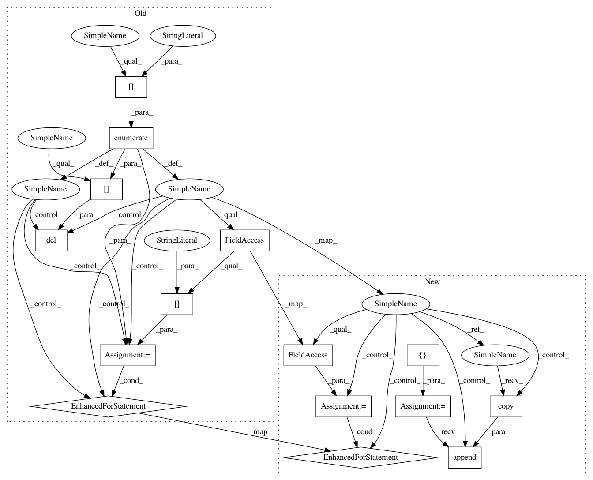

7135527fd00f0a385b65bfb32f9535c3859d1f8a,GPy/kern/src/add.py,Add,__init__,#Add#,17
Before Change
This kernel will take over the active dims of it"s subkernels passed in.
def __init__(self, subkerns, name="sum"):
for i, kern in enumerate(subkerns[:]):
if isinstance(kern, Add):
del subkerns[i]
for part in kern.parts[::-1]:
//kern.unlink_parameter(part)
subkerns.insert(i, part.copy())
super(Add, self).__init__(subkerns, name)
self._exact_psicomp = self._check_exact_psicomp()
def _check_exact_psicomp(self):
After Change
unexpected behavior.
def __init__(self, subkerns, name="sum"):
_newkerns = []
for kern in subkerns:
if isinstance(kern, Add):
for part in kern.parts:
//kern.unlink_parameter(part)
_newkerns.append(part.copy())
else:
_newkerns.append(kern.copy())
super(Add, self).__init__(_newkerns, name)
self._exact_psicomp = self._check_exact_psicomp()
In pattern: SUPERPATTERN
Frequency: 3
Non-data size: 15
Instances
Project Name: SheffieldML/GPy
Commit Name: 7135527fd00f0a385b65bfb32f9535c3859d1f8a
Time: 2016-08-16
Author: ibinbei@gmail.com
File Name: GPy/kern/src/add.py
Class Name: Add
Method Name: __init__
Project Name: SheffieldML/GPy
Commit Name: b8867f1552c05244dcd5ba38a7a57b6f1056312c
Time: 2016-08-16
Author: ibinbei@gmail.com
File Name: GPy/kern/src/add.py
Class Name: Add
Method Name: __init__
Project Name: SheffieldML/GPy
Commit Name: 27d49bbe015435b77b791384407c4dd012491ee8
Time: 2016-08-16
Author: ibinbei@gmail.com
File Name: GPy/kern/src/add.py
Class Name: Add
Method Name: __init__